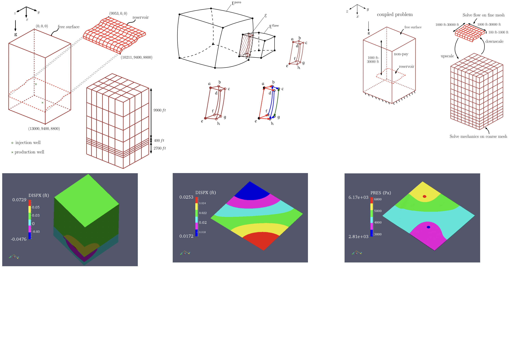

University of Texas at Austin, TX, USA
Aug 2012 - Dec 2018

The idea being that the injection or production wells in the reservoir section
of the domain causes geomechanical reaction which have implications on the
free surface, albeit on a different length scale. Prior to the implementation
of my algorithm, there was no way in-house for the code framework to pull off
a simulation of such magnitude.
With some sustained work in high performance computing, iterative solution techniques,
and coding in a mixed programming language environment, I was able to generate
simulations of free surface displacements along side pressure evolution almost
10000 feet beneath the free surface, at the same time.